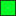

<!doctype html>
<html lang="en">
    <head>
        <meta charset="utf-8">
        <meta http-equiv="X-UA-Compatible" content="IE=edge">
        <meta name="viewport" content="initial-scale=1,user-scalable=no,maximum-scale=1,width=device-width">
        <meta name="mobile-web-app-capable" content="yes">
        <meta name="apple-mobile-web-app-capable" content="yes">
        <link rel="stylesheet" href="css/leaflet.css">
        <link rel="stylesheet" href="css/qgis2web.css"><link rel="stylesheet" href="css/fontawesome-all.min.css">
        <link rel="stylesheet" href="css/leaflet-measure.css">
        <style>
        #map {
            width: 987px;
            height: 785px;
        }
        </style>
        <title></title>
    </head>
    <body>
        <div id="map">
        </div>
        <script src="js/qgis2web_expressions.js"></script>
        <script src="js/leaflet.js"></script>
        <script src="js/leaflet.rotatedMarker.js"></script>
        <script src="js/leaflet.pattern.js"></script>
        <script src="js/leaflet-hash.js"></script>
        <script src="js/Autolinker.min.js"></script>
        <script src="js/rbush.min.js"></script>
        <script src="js/labelgun.min.js"></script>
        <script src="js/labels.js"></script>
        <script src="js/leaflet-measure.js"></script>
        <script src="data/Ocean_0.js"></script>
        <script src="data/Sponsorship_Grid_1.js"></script>
        <script src="data/AorangiForestPark_2.js"></script>
        <script src="data/Streams__3.js"></script>
        <script>
        var highlightLayer;
        function highlightFeature(e) {
            highlightLayer = e.target;

            if (e.target.feature.geometry.type === 'LineString') {
              highlightLayer.setStyle({
                color: '#ffff00',
              });
            } else {
              highlightLayer.setStyle({
                fillColor: '#ffff00',
                fillOpacity: 1
              });
            }
        }
        var map = L.map('map', {
            zoomControl:true, maxZoom:28, minZoom:10
        }).fitBounds([[-41.64604885078286,175.1424135225947],[-41.284104976688155,175.52478088880005]]);
        var hash = new L.Hash(map);
        map.attributionControl.setPrefix('</a> &middot; <a href="http://leafletjs.com" title="A JS library for interactive maps">Leaflet</a>');
        var measureControl = new L.Control.Measure({
            position: 'topleft',
            primaryLengthUnit: 'meters',
            secondaryLengthUnit: 'kilometers',
            primaryAreaUnit: 'sqmeters',
            secondaryAreaUnit: 'hectares'
        });
        measureControl.addTo(map);
        document.getElementsByClassName('leaflet-control-measure-toggle')[0]
        .innerHTML = '';
        document.getElementsByClassName('leaflet-control-measure-toggle')[0]
        .className += ' fas fa-ruler';
        var bounds_group = new L.featureGroup([]);
        function setBounds() {
            map.setMaxBounds(map.getBounds());
        }
        function pop_Ocean_0(feature, layer) {
            layer.on({
                mouseout: function(e) {
                    for (i in e.target._eventParents) {
                        e.target._eventParents[i].resetStyle(e.target);
                    }
                },
                mouseover: highlightFeature,
            });
            var popupContent = '<table>\
                    <tr>\
                        <td colspan="2">' + (feature.properties['id'] !== null ? Autolinker.link(String(feature.properties['id'])) : '') + '</td>\
                    </tr>\
                </table>';
            layer.bindPopup(popupContent, {maxHeight: 400});
        }

        function style_Ocean_0_0() {
            return {
                pane: 'pane_Ocean_0',
                opacity: 1,
                color: 'rgba(35,35,35,0.0)',
                dashArray: '',
                lineCap: 'butt',
                lineJoin: 'miter',
                weight: 1.0, 
                fill: true,
                fillOpacity: 1,
                fillColor: 'rgba(22,80,96,1.0)',
            }
        }
        map.createPane('pane_Ocean_0');
        map.getPane('pane_Ocean_0').style.zIndex = 400;
        map.getPane('pane_Ocean_0').style['mix-blend-mode'] = 'normal';
        var layer_Ocean_0 = new L.geoJson(json_Ocean_0, {
            attribution: '',
            pane: 'pane_Ocean_0',
            /*onEachFeature: pop_Ocean_0,*/
            style: style_Ocean_0_0,
        });
        bounds_group.addLayer(layer_Ocean_0);
        map.addLayer(layer_Ocean_0);

        L.tileLayer('http://tiles-a.data-cdn.linz.govt.nz/services;key=9cb996efe1be4d57a85341379f05df2e/tiles/v4/layer=51870/EPSG:3857/{z}/{x}/{y}.png', {
        attribution: 'Contains data sourced from the <a href="https://data.linz.govt.nz/layer/51870-wellington-03m-rural-aerial-photos-2012-2013/">LINZ Data Service</a> licensed for reuse under CC BY 4.0 '
        }).addTo(map);

        function pop_Sponsorship_Grid_1(feature, layer) {
            layer.on({
                mouseout: function(e) {
                    for (i in e.target._eventParents) {
                        e.target._eventParents[i].resetStyle(e.target);
                    }
                },
                mouseover: highlightFeature,
            });
            var popupContent = '<table>\
                    <tr>\
                        <th scope="row">Grid_ID</th>\
                        <td>' + (feature.properties['Grid_ID'] !== null ? Autolinker.link(String(feature.properties['Grid_ID'])) : '') + '</td>\
                    </tr>\
                    <tr>\
                        <th scope="row">Sponsored</th>\
                        <td>' + (feature.properties['Sponsored'] !== null ? Autolinker.link(String(feature.properties['Sponsored'])) : '') + '</td>\
                    </tr>\
                    <tr>\
                        <th scope="row">Name</th>\
                        <td>' + (feature.properties['Name'] !== null ? Autolinker.link(String(feature.properties['Name'])) : '') + '</td>\
                    </tr>\
                    <tr>\
                        <th scope="row">URL</th>\
                        <td>' + (feature.properties['URL'] !== null ? Autolinker.link(String(feature.properties['URL'])) : '') + '</td>\
                    </tr>\
                </table>';
            layer.bindPopup(popupContent, {maxHeight: 400});
        }

        function style_Sponsorship_Grid_1_0(feature) {
            switch(String(feature.properties['Sponsored'])) {
                case 'Available':
                    return {
                pane: 'pane_Sponsorship_Grid_1',
                opacity: 1,
                color: 'rgba(25,18,18,0.303)',
                dashArray: '',
                lineCap: 'butt',
                lineJoin: 'miter',
                weight: 1.0, 
                fill: true,
                fillOpacity: 1,
                fillColor: 'rgba(5,248,38,0.303)',
            }
                    break;
                case 'Sponsored':
                    return {
                pane: 'pane_Sponsorship_Grid_1',
                opacity: 1,
                color: 'rgba(150,145,145,0.303)',
                dashArray: '',
                lineCap: 'butt',
                lineJoin: 'miter',
                weight: 1.0, 
                fill: true,
                fillOpacity: 1,
                fillColor: 'rgba(247,5,17,0.303)',
            }
                    break;
            }
        }
        map.createPane('pane_Sponsorship_Grid_1');
        map.getPane('pane_Sponsorship_Grid_1').style.zIndex = 401;
        map.getPane('pane_Sponsorship_Grid_1').style['mix-blend-mode'] = 'normal';
        var layer_Sponsorship_Grid_1 = new L.geoJson(json_Sponsorship_Grid_1, {
            attribution: '',
            pane: 'pane_Sponsorship_Grid_1',
            onEachFeature: pop_Sponsorship_Grid_1,
            style: style_Sponsorship_Grid_1_0,
        });
        bounds_group.addLayer(layer_Sponsorship_Grid_1);
        map.addLayer(layer_Sponsorship_Grid_1);
        function pop_AorangiForestPark_2(feature, layer) {
            layer.on({
                mouseout: function(e) {
                    for (i in e.target._eventParents) {
                        e.target._eventParents[i].resetStyle(e.target);
                    }
                },
                mouseover: highlightFeature,
            });
            var popupContent = '<table>\
                    <tr>\
                        <th scope="row">Name</th>\
                        <td>' + (feature.properties['Name'] !== null ? Autolinker.link(String(feature.properties['Name'])) : '') + '</td>\
                    </tr>\
                </table>';
            layer.bindPopup(popupContent, {maxHeight: 400});
        }

        function style_AorangiForestPark_2_0() {
            return {
                pane: 'pane_AorangiForestPark_2',
                opacity: 1,
                color: 'rgba(247,182,2,1.0)',
                dashArray: '',
                lineCap: 'square',
                lineJoin: 'bevel',
                weight: 3.0,
                fillOpacity: 0,
            }
        }
        map.createPane('pane_AorangiForestPark_2');
        map.getPane('pane_AorangiForestPark_2').style.zIndex = 402;
        map.getPane('pane_AorangiForestPark_2').style['mix-blend-mode'] = 'normal';
        var layer_AorangiForestPark_2 = new L.geoJson(json_AorangiForestPark_2, {
            attribution: '',
            pane: 'pane_AorangiForestPark_2',
            onEachFeature: pop_AorangiForestPark_2,
            style: style_AorangiForestPark_2_0,
        });
        bounds_group.addLayer(layer_AorangiForestPark_2);
        map.addLayer(layer_AorangiForestPark_2);
        function pop_Streams__3(feature, layer) {
            layer.on({
                mouseout: function(e) {
                    for (i in e.target._eventParents) {
                        e.target._eventParents[i].resetStyle(e.target);
                    }
                },
                mouseover: highlightFeature,
            });
            var popupContent = '<table>\
                    <tr>\
                        <th scope="row">Name</th>\
                        <td>' + (feature.properties['Name'] !== null ? Autolinker.link(String(feature.properties['Name'])) : '') + '</td>\
                    </tr>\
                </table>';
            layer.bindPopup(popupContent, {maxHeight: 400});
        }

        function style_Streams__3_0() {
            return {
                pane: 'pane_Streams__3',
                opacity: 1,
                color: 'rgba(15,90,251,0.906)',
                dashArray: '',
                lineCap: 'square',
                lineJoin: 'bevel',
                weight: 2.0,
                fillOpacity: 0,
            }
        }
        map.createPane('pane_Streams__3');
        map.getPane('pane_Streams__3').style.zIndex = 403;
        map.getPane('pane_Streams__3').style['mix-blend-mode'] = 'normal';
        var layer_Streams__3 = new L.geoJson(json_Streams__3, {
            attribution: '',
            pane: 'pane_Streams__3',
            onEachFeature: pop_Streams__3,
            style: style_Streams__3_0,
        });
        bounds_group.addLayer(layer_Streams__3);
        map.addLayer(layer_Streams__3);
        var baseMaps = {};
        L.control.layers(baseMaps,{' Streams_': layer_Streams__3,' Aorangi Forest Park': layer_AorangiForestPark_2,'Sponsorship_Grid<br /><table><tr><td style="text-align: center;"></td><td>Available</td></tr><tr><td style="text-align: center;"></td><td>Sponsored</td></tr></table>': layer_Sponsorship_Grid_1,' Ocean': layer_Ocean_0,},{collapsed:true}).addTo(map);
        setBounds();
        </script>
    </body>
</html>
